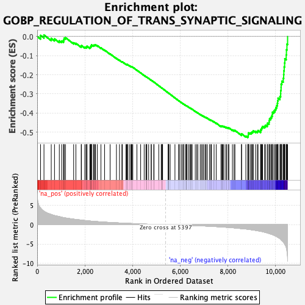
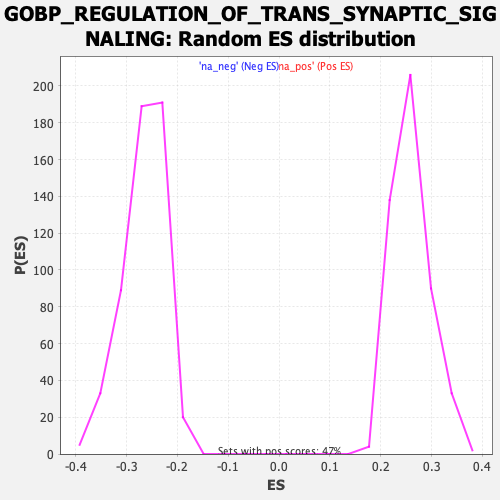

| Dataset | qlf.KOd4vsWTd4_gsea_score |
| Phenotype | NoPhenotypeAvailable |
| Upregulated in class | na_neg |
| GeneSet | GOBP_REGULATION_OF_TRANS_SYNAPTIC_SIGNALING |
| Enrichment Score (ES) | -0.5279766 |
| Normalized Enrichment Score (NES) | -1.9857199 |
| Nominal p-value | 0.0 |
| FDR q-value | 0.011810566 |
| FWER p-Value | 0.127 |

| SYMBOL | RANK IN GENE LIST | RANK METRIC SCORE | RUNNING ES | CORE ENRICHMENT | |
|---|---|---|---|---|---|
| 1 | HOMER1 | 140 | 4.307 | 0.0058 | No |
| 2 | EIF4E | 284 | 3.471 | 0.0076 | No |
| 3 | RARA | 589 | 2.641 | -0.0100 | No |
| 4 | ITGB1 | 726 | 2.358 | -0.0125 | No |
| 5 | KAT2A | 928 | 2.095 | -0.0226 | No |
| 6 | ABHD6 | 1026 | 1.948 | -0.0232 | No |
| 7 | EIF4A3 | 1104 | 1.827 | -0.0224 | No |
| 8 | DVL1 | 1121 | 1.814 | -0.0159 | No |
| 9 | CD38 | 1131 | 1.803 | -0.0086 | No |
| 10 | PSMC5 | 1187 | 1.745 | -0.0061 | No |
| 11 | USP46 | 1529 | 1.428 | -0.0327 | No |
| 12 | SLC6A6 | 1623 | 1.358 | -0.0356 | No |
| 13 | ATP2A2 | 1847 | 1.185 | -0.0518 | No |
| 14 | TNF | 1857 | 1.180 | -0.0474 | No |
| 15 | EIF2AK4 | 1997 | 1.081 | -0.0560 | No |
| 16 | YTHDF1 | 2049 | 1.042 | -0.0562 | No |
| 17 | ATF4 | 2079 | 1.020 | -0.0544 | No |
| 18 | BCR | 2090 | 1.015 | -0.0508 | No |
| 19 | RPL22 | 2207 | 0.951 | -0.0578 | No |
| 20 | YWHAG | 2235 | 0.931 | -0.0562 | No |
| 21 | P2RY1 | 2239 | 0.930 | -0.0523 | No |
| 22 | HRAS | 2268 | 0.913 | -0.0509 | No |
| 23 | ADORA2A | 2270 | 0.912 | -0.0470 | No |
| 24 | ARF1 | 2281 | 0.907 | -0.0438 | No |
| 25 | BTBD9 | 2358 | 0.869 | -0.0473 | No |
| 26 | AGER | 2378 | 0.862 | -0.0453 | No |
| 27 | PNKD | 2412 | 0.847 | -0.0446 | No |
| 28 | PRNP | 2448 | 0.833 | -0.0443 | No |
| 29 | PREPL | 2525 | 0.788 | -0.0481 | No |
| 30 | STXBP5 | 2674 | 0.730 | -0.0591 | No |
| 31 | NF1 | 2828 | 0.658 | -0.0710 | No |
| 32 | ZDHHC3 | 3060 | 0.576 | -0.0907 | No |
| 33 | NPTN | 3325 | 0.483 | -0.1141 | No |
| 34 | BEGAIN | 3453 | 0.444 | -0.1243 | No |
| 35 | NCDN | 3555 | 0.412 | -0.1323 | No |
| 36 | ANAPC2 | 3574 | 0.406 | -0.1322 | No |
| 37 | PRKACA | 3725 | 0.363 | -0.1450 | No |
| 38 | SLC12A2 | 3754 | 0.355 | -0.1462 | No |
| 39 | PPP3CB | 3782 | 0.346 | -0.1472 | No |
| 40 | GIT1 | 3793 | 0.344 | -0.1466 | No |
| 41 | MAPK1 | 3867 | 0.325 | -0.1522 | No |
| 42 | PLA2G6 | 3926 | 0.311 | -0.1564 | No |
| 43 | PICK1 | 3955 | 0.302 | -0.1578 | No |
| 44 | SERPINE2 | 3975 | 0.297 | -0.1583 | No |
| 45 | AKAP5 | 4012 | 0.285 | -0.1605 | No |
| 46 | ABL1 | 4184 | 0.246 | -0.1759 | No |
| 47 | USP8 | 4341 | 0.209 | -0.1901 | No |
| 48 | CRTC1 | 4489 | 0.171 | -0.2035 | No |
| 49 | PRKAR2B | 4563 | 0.151 | -0.2099 | No |
| 50 | MCTP2 | 4587 | 0.146 | -0.2114 | No |
| 51 | RAP1A | 4601 | 0.144 | -0.2121 | No |
| 52 | STAU1 | 4678 | 0.128 | -0.2188 | No |
| 53 | PPP3CA | 4781 | 0.109 | -0.2282 | No |
| 54 | RAP1B | 4788 | 0.107 | -0.2283 | No |
| 55 | CLN3 | 4893 | 0.089 | -0.2380 | No |
| 56 | PRRT2 | 4903 | 0.088 | -0.2384 | No |
| 57 | BACE1 | 5101 | 0.051 | -0.2572 | No |
| 58 | STX3 | 5204 | 0.034 | -0.2669 | No |
| 59 | KCTD13 | 5232 | 0.030 | -0.2694 | No |
| 60 | DLG4 | 5247 | 0.028 | -0.2706 | No |
| 61 | RAB5A | 5263 | 0.026 | -0.2720 | No |
| 62 | CDC20 | 5494 | -0.014 | -0.2941 | No |
| 63 | FMR1 | 5497 | -0.015 | -0.2943 | No |
| 64 | DTNBP1 | 5508 | -0.016 | -0.2952 | No |
| 65 | YWHAH | 5524 | -0.019 | -0.2965 | No |
| 66 | AKAP9 | 5580 | -0.028 | -0.3017 | No |
| 67 | ZDHHC12 | 5781 | -0.061 | -0.3208 | No |
| 68 | ERC1 | 5929 | -0.085 | -0.3346 | No |
| 69 | MECP2 | 5973 | -0.092 | -0.3384 | No |
| 70 | KCNMB4 | 6041 | -0.104 | -0.3444 | No |
| 71 | DGKE | 6095 | -0.114 | -0.3490 | No |
| 72 | SYN3 | 6148 | -0.124 | -0.3534 | No |
| 73 | PLCL2 | 6153 | -0.125 | -0.3533 | No |
| 74 | CLSTN1 | 6230 | -0.141 | -0.3600 | No |
| 75 | RAPSN | 6256 | -0.147 | -0.3617 | No |
| 76 | ATAD1 | 6268 | -0.148 | -0.3621 | No |
| 77 | PPP1R9B | 6270 | -0.148 | -0.3616 | No |
| 78 | KRAS | 6337 | -0.162 | -0.3672 | No |
| 79 | PACSIN2 | 6400 | -0.179 | -0.3724 | No |
| 80 | FBXL20 | 6431 | -0.185 | -0.3745 | No |
| 81 | SNAPIN | 6465 | -0.192 | -0.3768 | No |
| 82 | CYFIP1 | 6505 | -0.200 | -0.3797 | No |
| 83 | SRF | 6634 | -0.232 | -0.3910 | No |
| 84 | RAB3GAP1 | 6696 | -0.249 | -0.3958 | No |
| 85 | HAP1 | 6740 | -0.258 | -0.3988 | No |
| 86 | KIF5B | 6842 | -0.285 | -0.4073 | No |
| 87 | RASGRF2 | 6893 | -0.300 | -0.4108 | No |
| 88 | SLC30A1 | 6943 | -0.313 | -0.4141 | No |
| 89 | S1PR2 | 6990 | -0.328 | -0.4171 | No |
| 90 | ZDHHC2 | 7050 | -0.342 | -0.4213 | No |
| 91 | TYROBP | 7088 | -0.354 | -0.4232 | No |
| 92 | PLK2 | 7139 | -0.368 | -0.4264 | No |
| 93 | APP | 7231 | -0.392 | -0.4335 | No |
| 94 | PSEN1 | 7286 | -0.410 | -0.4368 | No |
| 95 | PRKCE | 7313 | -0.422 | -0.4375 | No |
| 96 | GSK3B | 7422 | -0.460 | -0.4458 | No |
| 97 | MTMR2 | 7512 | -0.496 | -0.4522 | No |
| 98 | CX3CR1 | 7713 | -0.575 | -0.4690 | No |
| 99 | UNC13A | 7732 | -0.583 | -0.4681 | No |
| 100 | PFN2 | 7767 | -0.599 | -0.4687 | No |
| 101 | LRP8 | 7794 | -0.609 | -0.4685 | No |
| 102 | CNR2 | 7835 | -0.625 | -0.4695 | No |
| 103 | DGKZ | 7913 | -0.657 | -0.4740 | No |
| 104 | NCSTN | 7956 | -0.677 | -0.4750 | No |
| 105 | APOE | 8021 | -0.702 | -0.4781 | No |
| 106 | GRIK5 | 8043 | -0.712 | -0.4769 | No |
| 107 | PLCL1 | 8192 | -0.785 | -0.4877 | No |
| 108 | GIPC1 | 8262 | -0.824 | -0.4907 | No |
| 109 | EIF4EBP2 | 8298 | -0.838 | -0.4903 | No |
| 110 | RAPGEF2 | 8573 | -1.013 | -0.5122 | No |
| 111 | CALM3 | 8575 | -1.014 | -0.5078 | No |
| 112 | CCR2 | 8756 | -1.121 | -0.5201 | No |
| 113 | GNAI2 | 8838 | -1.188 | -0.5226 | Yes |
| 114 | PAIP2 | 8854 | -1.205 | -0.5187 | Yes |
| 115 | RAB8A | 8858 | -1.207 | -0.5136 | Yes |
| 116 | DLGAP4 | 8861 | -1.208 | -0.5083 | Yes |
| 117 | PXK | 8865 | -1.213 | -0.5032 | Yes |
| 118 | KCNB1 | 8931 | -1.258 | -0.5038 | Yes |
| 119 | VPS18 | 8983 | -1.307 | -0.5029 | Yes |
| 120 | VAMP2 | 9010 | -1.325 | -0.4994 | Yes |
| 121 | SIPA1L1 | 9047 | -1.351 | -0.4969 | Yes |
| 122 | RAB26 | 9066 | -1.376 | -0.4924 | Yes |
| 123 | SYAP1 | 9162 | -1.471 | -0.4950 | Yes |
| 124 | CACNA1A | 9238 | -1.560 | -0.4953 | Yes |
| 125 | STXBP1 | 9268 | -1.585 | -0.4909 | Yes |
| 126 | PRKCZ | 9376 | -1.704 | -0.4936 | Yes |
| 127 | FYN | 9380 | -1.708 | -0.4863 | Yes |
| 128 | FABP5 | 9412 | -1.741 | -0.4814 | Yes |
| 129 | GLUL | 9431 | -1.776 | -0.4752 | Yes |
| 130 | CDK5 | 9458 | -1.811 | -0.4696 | Yes |
| 131 | CAMK2B | 9541 | -1.947 | -0.4688 | Yes |
| 132 | PTEN | 9580 | -2.009 | -0.4634 | Yes |
| 133 | ADRB2 | 9657 | -2.133 | -0.4612 | Yes |
| 134 | ARC | 9667 | -2.162 | -0.4524 | Yes |
| 135 | PTK2B | 9731 | -2.282 | -0.4482 | Yes |
| 136 | RAB3A | 9736 | -2.297 | -0.4383 | Yes |
| 137 | SORCS2 | 9752 | -2.334 | -0.4293 | Yes |
| 138 | STX1A | 9804 | -2.438 | -0.4233 | Yes |
| 139 | BAIAP2 | 9838 | -2.491 | -0.4153 | Yes |
| 140 | PINK1 | 9865 | -2.552 | -0.4063 | Yes |
| 141 | BAIAP3 | 9872 | -2.562 | -0.3954 | Yes |
| 142 | SRGN | 9931 | -2.718 | -0.3888 | Yes |
| 143 | ARRB2 | 9982 | -2.871 | -0.3808 | Yes |
| 144 | MPP2 | 10015 | -2.939 | -0.3707 | Yes |
| 145 | PRKCB | 10053 | -3.078 | -0.3604 | Yes |
| 146 | TUBB2B | 10078 | -3.187 | -0.3484 | Yes |
| 147 | ABR | 10092 | -3.222 | -0.3352 | Yes |
| 148 | JAK2 | 10109 | -3.287 | -0.3220 | Yes |
| 149 | KIT | 10186 | -3.625 | -0.3131 | Yes |
| 150 | ITPR3 | 10217 | -3.775 | -0.2991 | Yes |
| 151 | SQSTM1 | 10219 | -3.778 | -0.2822 | Yes |
| 152 | SYP | 10235 | -3.894 | -0.2662 | Yes |
| 153 | NTNG2 | 10237 | -3.899 | -0.2488 | Yes |
| 154 | SLC4A8 | 10268 | -4.123 | -0.2332 | Yes |
| 155 | GABBR1 | 10326 | -4.469 | -0.2186 | Yes |
| 156 | FLOT1 | 10344 | -4.611 | -0.1996 | Yes |
| 157 | NSMF | 10351 | -4.648 | -0.1793 | Yes |
| 158 | RGS14 | 10365 | -4.772 | -0.1591 | Yes |
| 159 | EGR2 | 10383 | -4.986 | -0.1384 | Yes |
| 160 | PTPRA | 10392 | -5.042 | -0.1165 | Yes |
| 161 | RNF19A | 10450 | -5.822 | -0.0959 | Yes |
| 162 | LGMN | 10459 | -6.161 | -0.0690 | Yes |
| 163 | AKAP12 | 10481 | -6.918 | -0.0400 | Yes |
| 164 | SYT11 | 10508 | -9.472 | -0.0000 | Yes |
